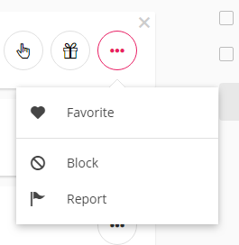
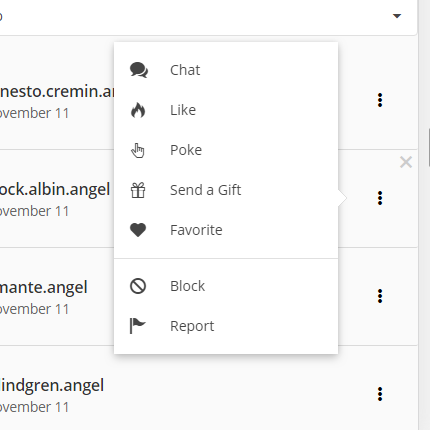
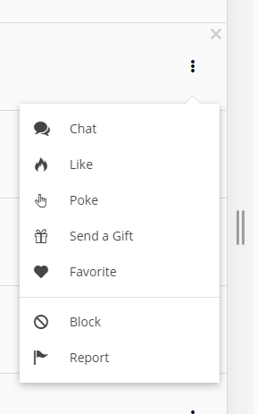
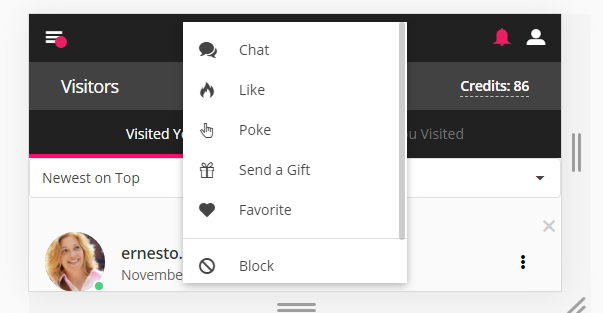
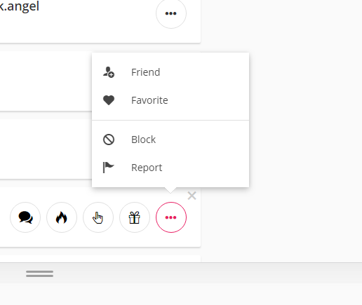

Домашка от 2019.11.15
Улучшить виджет попапа с последнего занятия (в папке examples)
- Попап должен открываться во все четыре стороны 
- Попап должен выбирать корректную сторону в зависимости от доступного места на экране. Т.е. если вниз открыть нельзя, то пытаемся открыть влево -> вверх -> вправо. 
- Важный пример: попап можно открыть вниз, если его размер в высоту меньше чем осталось до конца body элемента (плюс отступы от окна браузера если нужны). При этом не исключена ситуация, что необходимо подвинуть попап влево / вправо, чтобы он был в пределах body по горизонтали. Аналогично для всех сторон. 
- (опционально) Если ни одна из сторон для открытия не является возможной, то попап должен открываться как модальное окно поверх всего контента и с внутренними скроллами (если надо) 
- (опционально) Очень часто у попапа существует треугольник, который должен быть спозиционирован напротив виджета, который этот попап открывает. 
- (опционально, сложно) Когда попап открыт, существует возможность использовать скроллы вышестоящих элементов или скролл окна браузера. В обоих случаях попап останется фиксированным в той позиции, в которой был открыт, что приводит к некорректному UI. Корректным решением является запретить вышестоящие скроллы, пока попап открыт. Но при использовании скролла окна браузера позиции попапа должны быть пересчитаны. Более простым вариантом является закрытие попапа при взаимодействии со скроллом